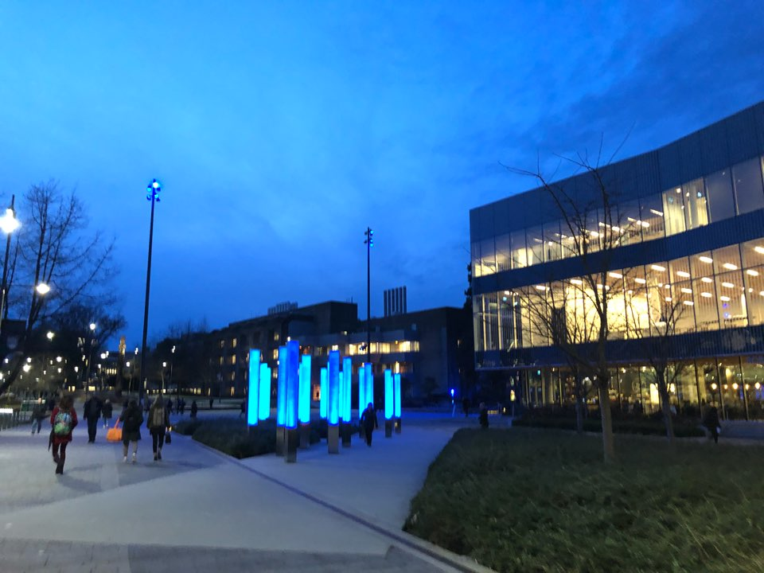
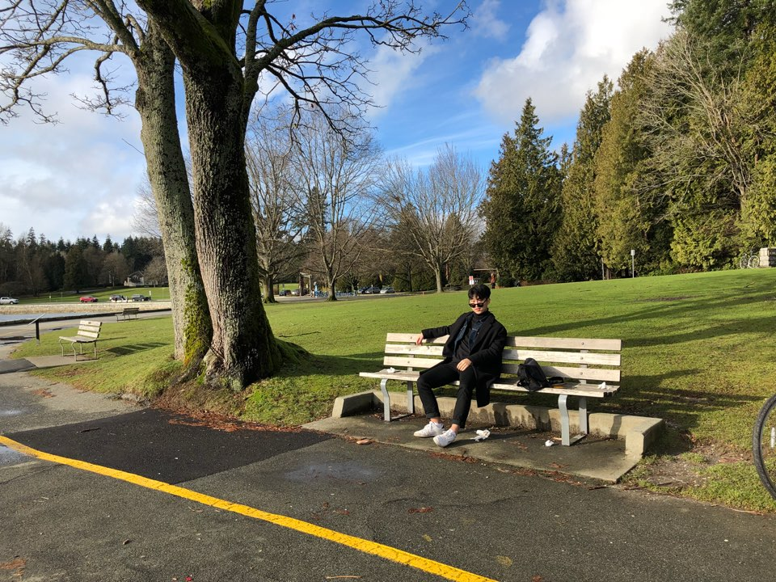
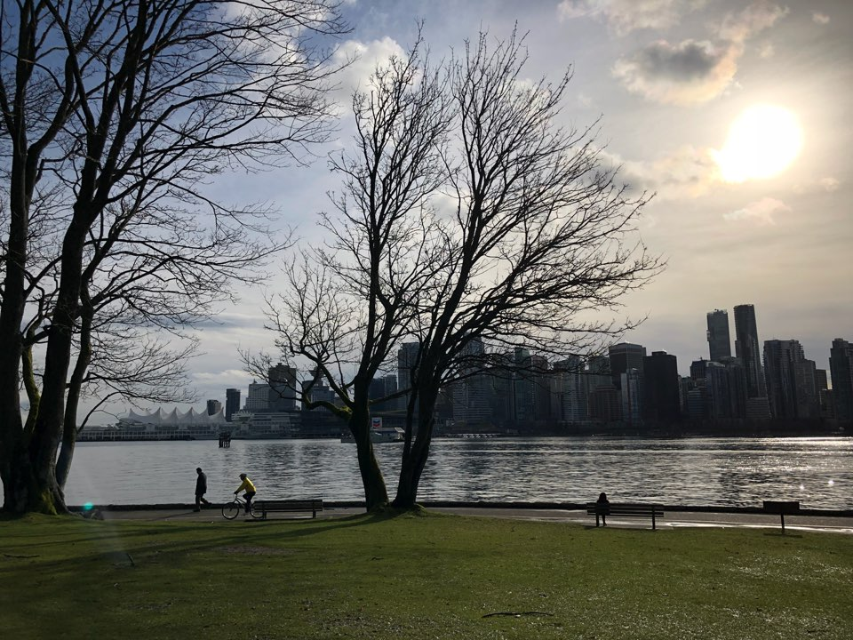
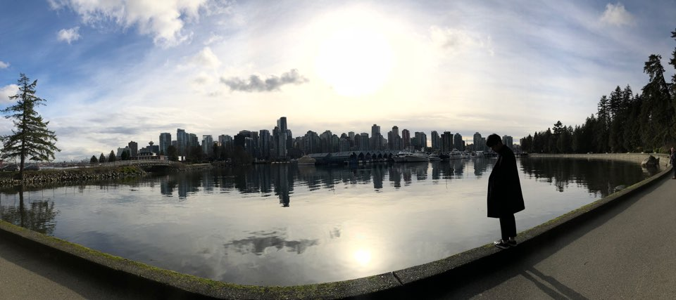
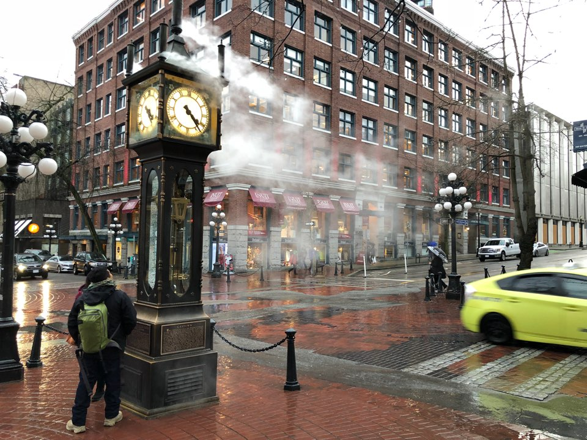
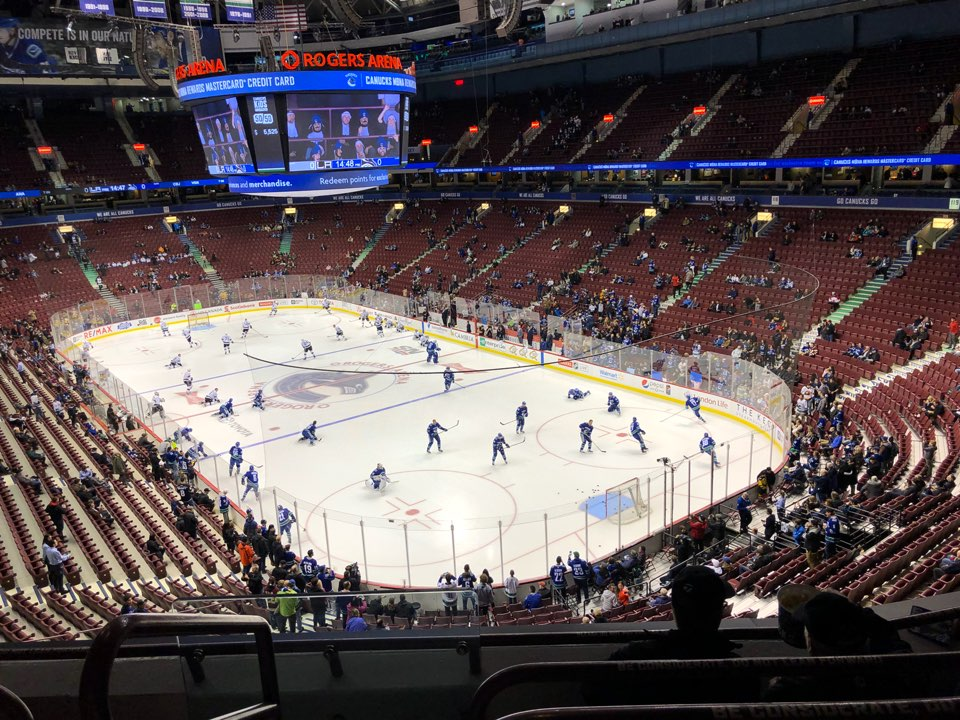

2018.01.23~2018.01.30, 6박 7일 동안의 캐나다 여행

Hollyburn Mountain 의 전경이다. 등산로 코스가 스키를 장착하고 오를 수 있는 코스, 아이젠을 장착하고 오를 수 있는 코스 두 가지가 있다. 정상 쯤에서 바라보는 경치는 그야말로 천국이다.
The University of British Columbia. 밴쿠버에 있는 공립대학교이다. 약칭이 'UBC'로, 공식적인 세계 대학 순위 27위로 등재되어 있다. 생각보다 보이는 한국인 재학생이 많았으며, 캠퍼스가 정말 아름답다.
  여지껏 내가 본 공원들 중 가장 큰 공원이 아니었을까 싶다. West Vancouver 와 East Vancouver 를 나누는 기준이 되는 공원이며, 내가 자전거를 대여해서 한 바퀴를 도는데 1시간이 걸렸다. 이 공원을 오는 셔틀버스도 운행하며, 스탠리파크 내에서는 흡연이 금지되어 있다. 공원 중앙엔 아쿠아리움이 있다.
벤쿠버 다운타운, GasTown의 모습이다. 사진에 보이는 시계탑은 Steam Clock 으로 유명한 시계탑이다. 정각마다 증기를 배출한다. GasTown에 유명한 맛집들이 많이 위치해 있으며, 캐나다를 대표하는 상품들을 파는 상점들 또한 많다. 페리 선착장도 있어 사람들이 항상 많은 편이며, 낮이든 밤이든 이뻤다. 그러나, 조금만 벗어나면 캐나다에서 합법적으로 마약을 할 수 있는 East Hastings Street 이 나오는데 우범 지역에 밤엔 굉장히 위험한 길목이므로 주의해야 한다. 들어가보진 않았지만 이 거리에서 나오는 사람들의 모습은...심각했다.
Vancouver Canucks 하키 팀의 경기장으로, 이 경기장 내의 열기는 내가 가봤던 직관 경기들 중 가장 뜨거웠다. 경기장 내 Pub 도 다양한 안주들이 있었고, 경기를 보면서 먹을 수 있는 햄버거도 정말 맛있었다. 다만 이 날 경기는.. Canucks가 패배했다.